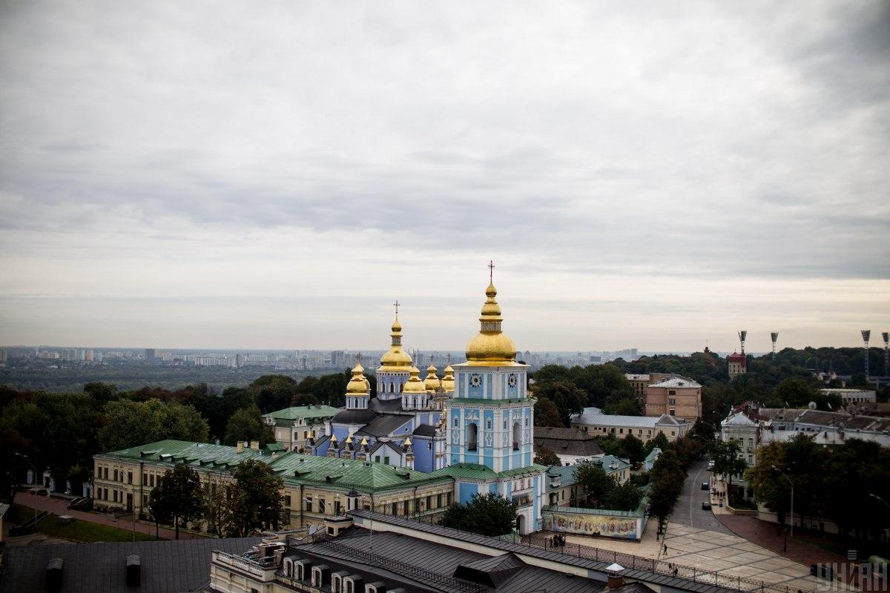

Боррель: ЄС підтримуватиме Україну попри будь-який шантаж Росії
Європейський союз продовжить підтримувати Україні у боротьбі проти російської агресії стільки, скільки буде потрібно.
Про це заявив глава дипломатії ЄС Жозеп Боррель на пресконференції після засідання Ради асоціації Україна-ЄС у Брюсселі, пише "Європейська правда".
"Головний меседж сьогоднішньої зустрічі всьому світу в тому, що ЄС продовжить підтримувати Україну попри будь-які погрози і шантаж Росії. Я казав це багато разів: вам не потрібні аплодисменти, вам не потрібні хороші слова, вам потрібна конкретна підтримка і зброя. І ми надаємо її", - сказав Боррель.
"Ми надаватимемо політичну, фінансову, гуманітарну і військову підтримку стільки, скільки потрібно. Наша ціль – допомогти Україні виграти війну. Ми хочемо, щоб ця війна скінчилася, але не будь-яким чином, а відповідно до норм територіальної цілісності України", - сказав Боррель.
Раніше ЄС та Україна підписали угоду щодо 500 млн євро бюджетної підтримки для України. Також було підписано чотири секторальні угоди.Нагадаємо, речник Кремля Дмітрій Пєсков заявив, що проблеми з постачанням газу по "Північному потоку" зберігатимуться доти, доки не буде знято західні санкції.
Зеленський провів "підсумкову" розмову із Джонсоном
Президент Володимир Зеленський провів підсумкову телефонну розмову із прем'єром Британії Борисом Джонсоном, 5 серпня на цю посаду обрали міністра закордонних справ Великої Британії Ліз Трасс.
Джерело:Twitter Зеленського
"Провів підсумкову розмову з Борисом Джонсоном у його нинішньому статусі. Від імені всього українського народу подякував за особисту сміливість, принциповість і визначний внесок у протидію агресії РФ.З нетерпінням чекаю на співпрацю з великим другом України у новому статусі".
Утеплюйтеся: завтра в Києві стане ще холодніше
У вівторок, 6 вересня, в Києві буде холодно, але сухо.
Про це свідчать дані Погода УНІАН.
Вночі температура в столиці опуститься до зовсім некомфортних +9°, а вдень максимально підніметься лише до +16°. Без опадів. Весь день очікується хмарна погода з проясненнями.Вітер буде північно-західний, а його швидкість становитиме 1,4-2,5 м/с. Атмосферний тиск злегка знижений, але стабільний - 753 міліметри ртутного стовпа.
Погода на завтра
- У Львові у вівторок буде невелика хмарність. Вночі +6°, вдень +17°.
-
У Чернівцях у вівторок - невелика хмарність, вночі +11°, вдень +18°.
- Вівторок: У Чернівцях небо майже весь день буде хмарним, вдень можливе невелике прояснення. Без опадів.
- Середа: У Чернівцях на зміну ясній погоді, яка буде триматися вранці та вдень, прийде похмурий вечір. Без опадів.
- Четверг: Вранці небо у Чернівцях буде ясним, і залишатиметься таким майже весь день, а ввечері його затягнуть хмари. Без опадів.
- У Луцьку - невелика хмарність, вночі +5°, вдень +16°.
- У Рівному у вівторок очікується невелика хмарність, вночі +5°, вдень +16°.
- У Тернополі 6 вересня вночі буде +8°, вдень +18°, невелика хмарність.
- У Хмельницькому завтра буде хмарно з проясненнями, вночі +5°, вдень +17°.
- В Ужгороді завтра стовпчики термометрів покажуть +11°...+24°, хмарно з проясненнями.